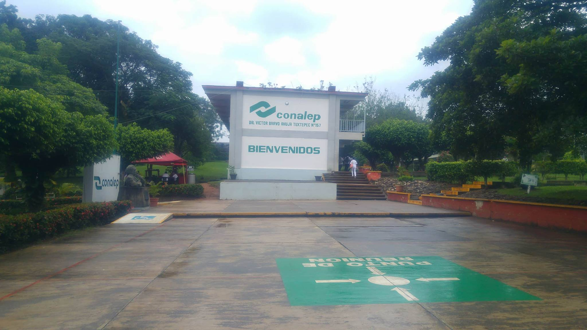

- 
-

-

Acerca de nosotros
El Colegio Nacional de Educación Profesional Técnica, Plantel Dr. Víctor Bravo Auja Tuxtepec No. 157 se ubica en Av. Principal S/N Predio Sumatra Colonia Parque Industrial en la Ciudad de Tuxtepec en el Estado de Oaxaca, con los números telefónicos: (287) 87 175 63 y 87 1 75 61. El Plantel cuenta con una población de 1300 alumnos aproximadamente, de los cuales la mayoría son lugareños. Ocupa un área total de 50,000 metros cuadrados de los cuales 20000 metros cuadrados están construidos, lo que representa el 40.0% de la superficie total. Tiene construidos 8 Edificios A, B, D, E, F, G, J, K; atendiendo a un promedio de 1300 alumnos por semestre, ubicados en 36 grupos, los cuales son atendidos en dos turnos, matutino y vespertino con un horario de 07:00 a.m. a 19:40 hrs. de Lunes a Viernes.
Seguir leyendo
Historia

En el mes de marzo de 1982 se inicia con la promoción del Plantel, el cual tenía como nombre: CONALEP Plantel Tuxtepec No. 157; no se contaba con instalaciones, el Municipio cedió un espacio en Bajos del Palacio Municipal para dar información al público en general.El 02 de septiembre de 1982 se inicia el ciclo escolar, con 2 aulas prefabricadas por la empresa FAPATUX las cuales se instalaron en la Unidad Deportiva de esta ciudad.
Enero de 1983 se inicia con los trámites de las instalaciones definitivas, en septiembre de 1984 se inicia el ciclo escolar en el domicilio actual de este Plantel.
En septiembre de 1991 en el acto el C. Diodoro Guerra en su calidad de Director de CONALEP cambia el nombre del Plantel quedando como “Dr. Víctor Bravo Ahuja” – Tuxtepec No. 157.
Mision y Vision
El Colegio Nacional de Educación Profesional Técnica, tiene como misión capacitar y evaluar con fines de certificación de competencias laborales y servicios tecnológicos para atender las necesidades del sector productivo del páis.
El Colegio Nacional de Educación Profesional Técnica es una Institución líder en la formación de Profesionales Técnicos y Profesionales Técnicos Bachiller en México, que cursan programas reconocidos por su calidad y basados en el modelo mexicano de formación dual.
Valores
El Profesional técnico recibe una formación integral que le permite comprender el mundo e influir en él, seguir aprendiendo de forma autónoma a lo largo de su vida, desarrollar relaciones armónicas con quienes le rodean y participar eficazmente en su vida social, profesional y política a lo largo de la vida, así como desempeñarse en diferentes ambientes laborales, ejerciendo la toma de decisiones con una actitud crítica, creativa, ética y responsable.
Destaca la flexibilidad que tiene el Modelo Académico para que el alumno pueda optar por trayectos de formación en campos profesionales y disciplinares específicos que le posibilitan el desarrollo de competencias dentro de un ámbito en constante cambio tecnológico, así como su posterior egreso como profesional Técnico o Profesional Técnico Bachiller.
Durante su formación, los alumnos tienen acceso a espacios mediados por tecnologías y orientados hacia la construcción del conocimiento como las Aulas Tipo, los Laboratorios de Autoaprendizaje y los espacios virtuales como la Red Académica y la Biblioteca Digital, en los que se pueden consultar materiales didácticos elaborados especialmente para apoyar el proceso de enseñanza-aprendizaje.